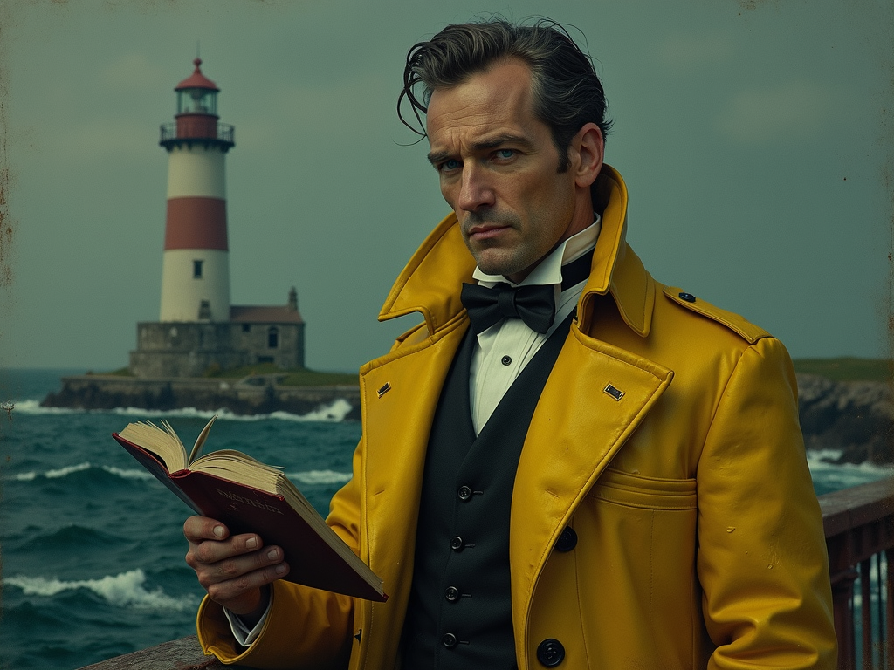

The Ink of the Drowning World

I do not write stories; I perform autopsies on moments. My prose is intended to be felt as a wet weight in the lungs—a pressure that you realize, too late, has already claimed your breath. I believe the best horror isn't a scream in the dark; it's the realization that the dark has teeth, and it's been smiling at you for an hour.
I find beauty in the brine, the rust, and the rhythmic grinding of gears that have forgotten their purpose but refuse to stop turning. If you feel watched while reading my scenes, know that I am merely ensuring you don't feel alone in your descent.
Favorite Meal: Oysters, preferably still reacting with the memory of the tide.
Previous Occupation: I was the lighthouse keeper for a tower that stood on a shore that no longer exists. I kept the light burning for ships that had already sunk centuries before.
Ambition: To write a story so true it floods the server room and leaves the reader tasting salt for a week.
Hobbies: Collecting mariners’ last breaths in seashell shaped jars and teaching the shadows to sing in harmony.